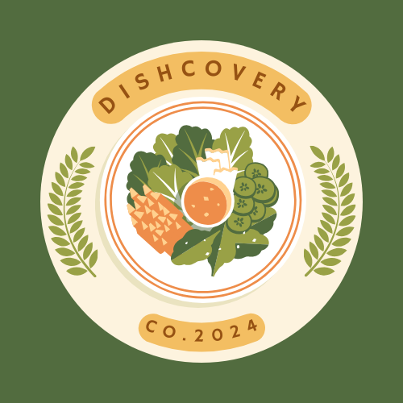

Projects

Makeathon Remora Project | Team Captain | Java
- Led a team to win the University of Georgia's first-ever Makeathon competition
- Developed REMORA, a sustainable solution that harnesses hydropower to generate electricity
- Designed the product and its functionality, and oversaw 3D printing
- Created a website for the product using HTML, CSS, and JavaScript
- Demonstrated strong leadership, problem-solving, and teamwork skills

Anime Weather App | Java
- Developed an Anime Weather App in Java and JavaFX
- Integrated three different APIs to collect the user's location and categorize the location's weather
- Provides a list of anime airing during the specific season based on weather conditions
- Implemented additional features such as displaying anime information in separate windows

Dishcovery | Team Lead & Developer | HTML, CSS, JavaScript, Node.js, Express.js, MongoDB Atlas
- Developed a full-stack social media platform for posting food reviews with images and tags
- Implemented user authentication, post creation, and interactive features like thumbs-up/down buttons
- Enabled filtering of posts based on tags and ensured smooth navigation with a clean UI
- Collaborated using GitHub for version control, code reviews, and team workflow management